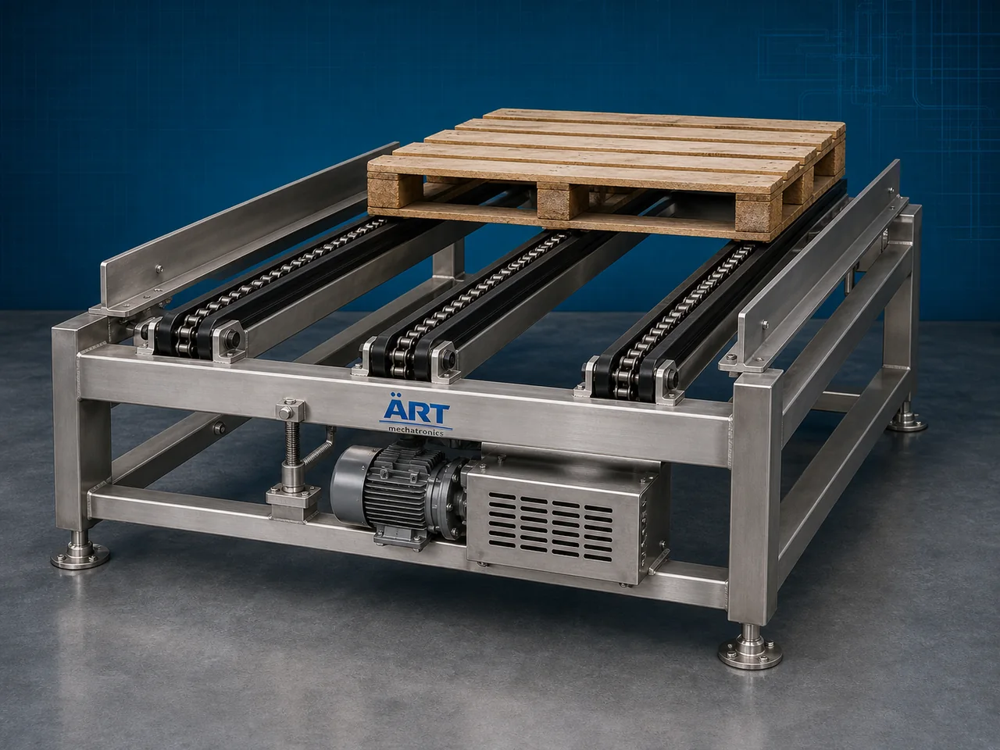

Chain Conveyor Machine (Industrial Chain Driven Material Handling & Transfer System)
A Chain Conveyor Machine, also known as an Industrial Chain Conveyor or Chain Driven Conveyor System, is a robust industrial material handling equipment designed for continuous transportation of heavy products, pallets, cartons, containers, industrial components, bulk materials, and production…

About the Chain Conveyor
Chain conveyor systems are widely used for: ✔ Heavy-duty product transportation ✔ Assembly line automation ✔ Pallet handling ✔ Industrial material transfer ✔ Packaging line integration ✔ Bulk material conveying
The machine improves: ✔ Production efficiency ✔ Material handling reliability ✔ Workflow automation ✔ Heavy load transfer capability ✔ Labor reduction ✔ Industrial productivity
Unlike conventional belt conveyors, chain conveyors use: ✔ Industrial conveyor chains ✔ Chain-driven mechanisms ✔ Heavy-duty structural frames ✔ Rigid conveying platforms
to transport heavy and high-impact loads efficiently.
Chain conveyor machines are widely used in industries such as:
Automobile industries
Packaging industries
Manufacturing plants
Cement industries
Steel industries
Warehousing & logistics
Food processing industries
Assembly line industries
where continuous transportation of heavy or bulky products is essential.
The machine is highly suitable for: ✔ Pallet conveying ✔ Carton transfer ✔ Heavy product handling ✔ Assembly line movement ✔ Industrial automation ✔ Bulk material transfer
ART Mechatronics offers high-performance chain conveyor machines, engineered for continuous industrial operation, heavy-duty load handling, rugged construction, and reliable long-term performance.
Working Principle of Chain Conveyor Machine
Products, pallets, cartons, or industrial materials are placed on conveyor system
Motor-driven chain mechanism moves continuously along conveyor track
Conveyor chains transfer products smoothly and reliably
Machine handles: ✔ Pallets ✔ Cartons ✔ Containers ✔ Drums ✔ Industrial components ✔ Heavy products under demanding industrial conditions.
Chain conveyor provides: Stable product movement High load capacity Shock resistance Reliable industrial operation
Conveyor integrates with: Assembly lines Packaging machines Warehouses Robotic systems Industrial automation plants
Products discharged continuously at required process point
Types of Chain Conveyor Machines
- 1. Drag Chain Conveyor
Uses: ✔ Drag chain mechanism for bulk material handling applications.
- 2. Slat Chain Conveyor
Uses: ✔ Chain-mounted slats for stable product transportation.
- 3. Pallet Chain Conveyor
Suitable for: ✔ Heavy pallet handling and warehouse automation systems
- 4. Overhead Chain Conveyor
Designed for: ✔ Hanging product transportation systems
- 5. Heavy Duty Industrial Chain Conveyor
Suitable for: ✔ Steel, cement, and manufacturing industries
- 6. Food Grade Chain Conveyor
Designed for: ✔ Hygienic food and packaging industries
Industries Using Chain Conveyor Machine
🚗 Automobile Industry Assembly line and component transfer systems 📦 Packaging Industry Carton and package handling systems 🏭 Manufacturing Industry Industrial automation and product transfer systems 🏗️ Cement Industry Heavy bulk material conveying systems 🏢 Warehousing & Logistics Pallet and container handling systems 🍃 Food Processing Industry Product transfer and packaging line automation 🏭 Steel Industry Heavy-duty industrial product handling systems ⚙️ Assembly Line Industry Continuous industrial production systems
Features & Advantages
✔ Heavy-duty industrial conveying capability ✔ Suitable for pallets and heavy products ✔ Reliable chain-driven transportation system ✔ Continuous industrial operation ✔ Rugged industrial construction ✔ High load carrying capacity ✔ Stable and secure product movement ✔ Easy integration with automated systems ✔ Low maintenance and long service life
Technical Highlights
Conveyor Type: Drag chain conveyor Slat chain conveyor Pallet chain conveyor Construction: Stainless Steel / Mild Steel Conveyor Mechanism: Roller chain drive Heavy-duty chain system Conveyor Arrangement: Horizontal Inclined Overhead transfer Drive System: Geared motor drive Chain drive system Automation: Semi-automatic Fully automatic PLC-based systems
Turnkey Chain Conveying Solutions
ART Mechatronics offers: Complete chain conveyor systems Assembly line automation solutions Pallet and heavy product handling systems Warehouse automation integration Installation & commissioning After-sales service & AMC
Why Choose Art Mechatronics
Expertise in industrial material handling and automation systems Customized chain conveyor solutions for multiple industries High-performance and durable industrial construction Energy-efficient and reliable conveying systems Proven industrial performance across sectors
Applications
Automobile Industries Packaging Facilities Manufacturing Plants Cement Industries Warehousing & Logistics Centers Food Processing Plants
Related Conveying & Handling machines
Get pricing & specs for the Chain Conveyor
Share the product, target capacity, current process and plant location. These details help our engineers discuss the right machine or line configuration.
One partner, from design to start-up
ART Mechatronics designs, manufactures, installs and commissions your Chain Conveyor solution with regional presence in India, UAE and Thailand.